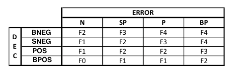

Configuración de técnicas de control
Técnica 1: PID
- Diseño y especificaciones
-
Como primera estrategia de control se diseñó un PID paralelo con filtros derivativo y anti-windup para controlar la descarga de limpiador por parte de los robots. La sintonización se llevó a cabo con el método de Tyreus-Luyben. Se consideró que la acción de control estaría en el rango entre 0V y 8V. Para ello se hizo un modelo dinámico del motor conectado al sistema piñón-cremallera y éste a la jeringa. Las especificaciones deseadas en el PID eran que no hubiera overshoot, que la acción de control fuera siempre mayor o igual a 0 y que el tiempo de estabilización fuera cercano a 0.5s.
Si no se tiene experiencia con sistemas de control, es preferible no modificar ninguno de estos parámetros. Sin embargo, en caso de que se requiera cambiar alguna característica del robot, como podría ser el motor por ejemplo, será necesario volver a sintonizar el PID. Para esto siga los siguientes pasos:
-
- Resistencia de la armadura del motor
- Inductancia del motor
- Mediciones de velocidad angular y corriente del motor en función del voltaje aplicado en sus terminales en un rango de 1V a 8V
- Corriente de arranque del motor
- Área de la sección transversal de la jeringa
- Radio del engrane
- Masa mínima que permite mover la carga
- Volumen máximo de la jeringa
- Momento de inercia del motor
- Coeficiente de fricción viscosa del motor
- Constante del motor
- Torque de la carga
- Hacer un modelo dinámico del sistema, incluyendo la saturación en la acción de control. Preferiblemente en Simulink. Como ejemplo se muestra la Figura 2.
- Identificar frecuencias y ganancias últimas.
- Utilizar las ecuaciones del método Tyreus-Luyben para escoger los valores Kp, Ki y Kd del PID. Con el método de back-calculation para el filtro anti-windup se halla Kb con la ecuación K_b=√(K_i/K_d ) (Visioli, 2006). El valor N de la constante del filtro derivativo se puede hallar al probar diversos valores.

Figura 2. Modelo en Simulink del PID y su planta
-
- Código Arduino
-
El PID diseñado se encuentra implementado en código en el archivo actuador.ino. El código está escrito en lenguaje Arduino, el cual es una forma simplificada de C, y se corre en el software Arduino IDE. Fue pensando para montarse en una tarjeta Arduino Mini. Si se cambia de tarjeta, recuerde verificar el número de los pines, como muestra la Figura 3. Por ejemplo, pinControl debe ser un pin con capacidad PWM.
Figura 3. Sección del código donde se especifican los pines
Por otro lado, los parámetros del PID están definidos como variables globales. Por tanto, para editarlos basta con modificar el segmento presentado en la Figura 4. Para información acerca de qué valores son adecuados, dirigirse a la sección 4.1.1. De nuevo, se recomienda que sólo realicen cambios personas con experiencia en el tema.
Figura 4. Sección del código donde se especifican los valores del PID
Técnica 2: Fuzzy Logic con Fault Detection
- Diseño y especificaciones
-
La segunda estrategia de control se basa en un detector de fallas usando lógica difusa. El Fuzzy Logic con Fault Detection tiene como objetivo detectar perturbaciones en el agua al interior de las tuberías. Dependiendo del nivel de falla que se logre observar, se mandan señales que indican a los robots cuando liquído limpiador deben inyectar. Para la parte de detección de fallas se deben seguir los siguientes pasos:
- Determinar el valor límite de limpieza en el agua. Para esto, se mide los valores que arroja la fotorresistencia con el agua limpia y se toma el valor máximo.
- Para 10 entradas de datos se resta el valor límite. Posteriormente se promedia los valores resultantes de las 10 restas. El promedio obtenido indica el error actual que se tiene en el sensor.
- El error actual se hace ingresar en una sumatoria. De esta manera se obtiene el error acumulado.
- El error acumulado se satura a 0 en caso de ser negativo.
- Determinar el valor Threshold del sistema, este dato se usa para evitar que sobre picos en el sistema afecten la determinación del nivel de falla. Para esto, se ensucia el agua hasta obtener el valor máximo de suciedad en la fotorresistencia. Como Treshold se toma el máximo valor medido multiplicado por 1,1.
- Al valor Treshold se le resta el error acumulado. El dato obtenido de la resta indica la diferencia del error acumulado.
A continuación debe realizarse la técnica Fuzzy Logic, los parámetros que se deben tener en cuenta son:
- Entradas: Error y diferencia del error acumulado.
- Salida: Nivel de falla.
- Reglas: Mamdani (IF X1 is A1 AND X2 is A2 … THEN Y is B).
- Método de Inferencia: Clipping.
- Método de Defuzificación: Centro del área
Para el diseño del Fuzzy Logic se hace uso del ToolBox de Matlab “fuzzy”. Los pasos que deben seguirse para la obtención de la estrategia Fuzzy, se muestran a continuación:
- Obtención de las funciones de membresía para las entradas.
- Se fuzzyfica los datos de entrada, tanto para el error como para la diferencia del error acumulado.
- Se utilizan funciones de membresía trapezoidales para los estados difusos de los extremos y funciones de membresía triangulares para los estados difusos interiores. El cálculo de los parámetros de las funciones de membresía se hacen de tal manera que las funciones de membresía sean simétricas.
- Obtención de las funciones de membresía para la salida.
- Se establece un intervalo de 0 a 1 para la salida y se fuzzyfica en estados difusos según los niveles de falla.
- Se utilizan funciones de membresía triangulares para los estados difusos. El cálculo de los parámetros de las funciones de membresía se hacen de tal manera que las funciones de membresía sean simétricas.
- Determinación de las reglas para el mapeo entre entradas y salidas. Con las entradas que se tienen para este sistema Fuzzy y los estados difusos mostrados en las figuras 3,4 y 5. Se recomienda hacer uso de la siguiente distribución:
- Defuzzyficación para obtener el valor de referencia según el nivel de falla.
Figura 5. Ejemplo funciones de membresía para el error.
Figura 6. Ejemplo funciones de membresía para la diferencia del error acumulado.

Figura 7. Ejemplo funciones de membresía para el nivel de falla.
Figura 8. Defuzzyficación para obtener el valor de referencia según el nivel de falla.
Los pasos anteriores deben realizarse para cada uno de los sensores instalados en la tubería.
Por último, se debe determinar los valores de referencia que se le indican a cada robot. Esto depende de la salida defuzzificada de cada uno de los sensores. Para obtener el valor de referencia de cada actuador se determina el alcance que tiene cada uno de los Robots en los diferentes sensores al interior de la tubería. El valor de referencia que se le indica a los robots se calcula de la siguiente manera:
- 〖ref〗_k, valor de referencia para el robot k.
- Cm, cantidad máxima de liquido limpiador que se puede inyectar.
- ∑j, sumatoria de las salidas de los sensores a los que se tiene alcance desde el robot k.
- n, número de sensores a los que se tiene alcance desde el robot k.
- Código Arduino o Intel Galileo
-
El Fuzzy Logic con Fault Detection diseñado se encuentra implementado en código en el archivo PruebaSensores.ino. El código está escrito en lenguaje Arduino, el cual es una forma simplificada de C, y se corre en el software Arduino IDE. Fue pensando para montarse en una tarjeta Intel Galileo. Se debe tener en cuenta que para poder utilizar esta tarjeta con el software de Arduino debe dhñasdñsa. Si se cambia de tarjeta, recuerde verificar el número de los pines, de tal manera que se correspondiente con su salida.